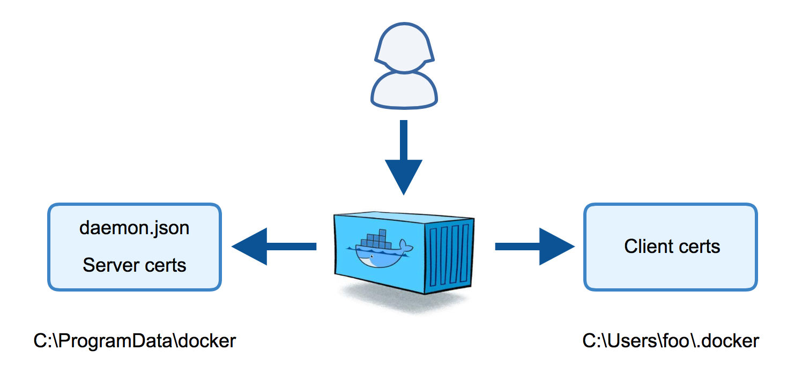
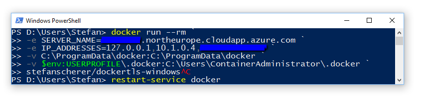
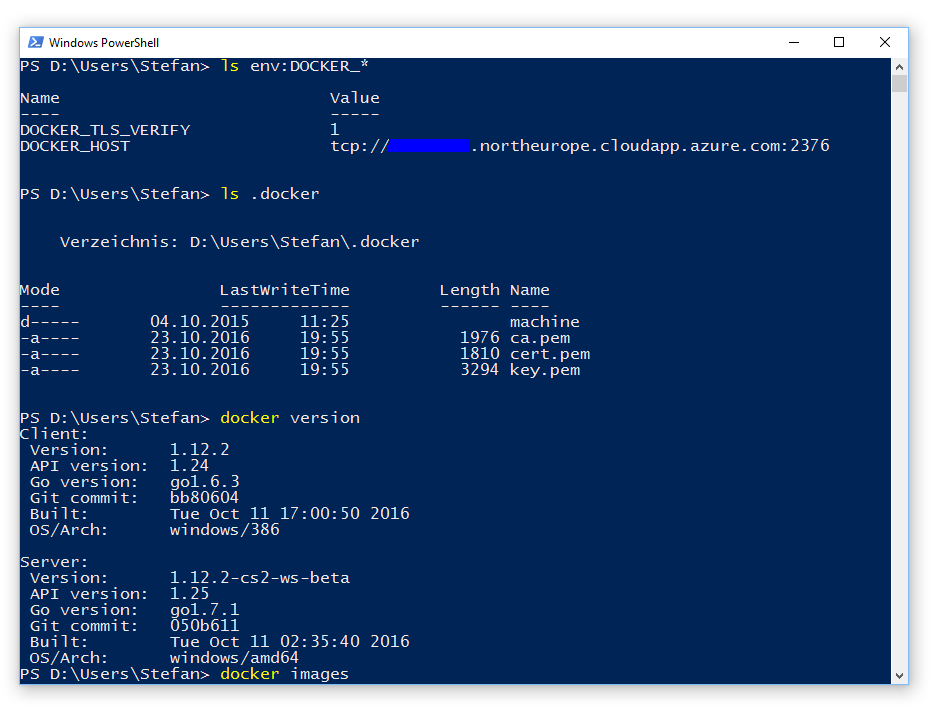

Today I have started a Windows Server 2016 VM with Container support in Azure. This is pretty easy as there is a prebuilt VM with the Docker base images. But I want a secured connection from my laptop to the Windows Docker engine running in Azure.
There is a tutorial Protect the Docker daemon socket at the website of Docker which uses the openssl tool to create all the certificates etc. But how should we do this on Windows?
Just containerize what's there
I have seen the DockerTLS script in a GitHub repo from Microsoft. But this script installs OpenSSL on my machine which I don't want to.
My first thought was, let's put this script + OpenSSL into a Docker image and run it in a Windows container.
So this Dockerfile was my first attempt to just use Chocolatey to install OpenSSL, download the PowerShell script from the Microsoft GitHub repo. Done. The script can run in a safe environment and I don't have to install software on my Docker host.
DockerTLS
But there is still work to do on the host to configure the Docker engine which I wanted to automate a little more. So it would be great to have a tool that can
- generate all TLS certs
- create or update the Docker
daemon.jsonfile - Put the client certs into my home directory
But still we need a program or script with OpenSSL to do that. I thought this tool should be deployed in a Docker image and shared on the Docker Hub. And here it is:
docker run dockertls

The script generate-certs.ps1 creates the TLS certs and copies them to the folders that would be used on the Docker host. The script would directly work on a Docker host if you have OpenSSL/LibreSSL installed.
The dockertls Docker image is created with this Dockerfile. It installs LibreSSL from OpenBSD (thanks to Michael Friis for that optimization) and copies the PowerShell script inside the image.
You can find the full source code of the dockertls image in my dockerfiles-windows GitHub repo if you want to build the Docker image yourself.
Otherwise you can just the dockertls Docker image from the Docker Hub.
Dry run
As you don't trust me or my Docker image you can do a dry run with some temporary folders where the container can copy files into without destroying your Docker host.
Just create two folders:
mkdir server
mkdir client\.docker
Now run the Windows container with the environment variables SERVER_NAME and IP_ADDRESSES as well as two volume mounts to write the certs back to the host:
docker run --rm `
-e SERVER_NAME=$(hostname) `
-e IP_ADDRESSES=127.0.0.1,192.168.254.123 `
-v "$(pwd)\server:C:\ProgramData\docker" `
-v "$(pwd)\client\.docker:C:\Users\ContainerAdministrator\.docker" `
stefanscherer/dockertls-windows
Afterwards check the folders:
dir server\certs.d
dir server\config
dir client\.docker
You will see that there are three pem files for the server, the daemon.json file as well as three pem files for the client.
Of course you could manually copy the files and try them out. But this Docker image can do this for you as well.
Full run
You may have to create the .docker folder in your home directory.
mkdir $env:USERPROFILE\.docker
Now run the container with the correct paths on the host so it can copy all certs and configs to the right place. The script can read an existing daemon.json and update it to keep all other configuration untouched.
docker run --rm `
-e SERVER_NAME=$(hostname) `
-e IP_ADDRESSES=127.0.0.1,192.168.254.123 `
-v "C:\ProgramData\docker:C:\ProgramData\docker" `
-v "$env:USERPROFILE\.docker:C:\Users\ContainerAdministrator\.docker" `
stefanscherer/dockertls-windows
Now you have to restart the Docker service in an administrator Shell with
restart-service docker
One last step is needed on your host. You have to open the port 2376 in your firewall so you can access the machine from the outside. But then you're done on your host.
You can recreate the TLS certs with the same command and just restart the Docker service afterwards.
Test TLS connection
Now test the connection to the TLS secured Docker service with
docker --tlsverify `
--tlscacert=$env:USERPROFILE\.docker\ca.pem `
--tlscert=$env:USERPROFILE\.docker\cert.pem `
--tlskey=$env:USERPROFILE\.docker\key.pem `
-H=tcp://127.0.0.1:2376 version
Or just set some environment variables
$env:DOCKER_HOST="tcp://127.0.0.1:2376"
$env:DOCKER_TLS_VERIFY="1"
docker version
Azure
In an Azure VM you should use your DNS name for the VM in the SERVER_NAME environment variable and your public and local IP addresses of that machine.

You have to open the firewall port 2376 on your Windows Docker host.
For Azure you also have to add a incoming rule for port 2376 in your network security group.
Then you have to securely transfer the three client pem files from your Azure VM to your laptop.
I've done that on my old Windows 10 machine which is only a 32bit machine, but I still can work with the Windows 2016 Docker engine running in Azure.

As always, please leave a comment if you have questions or improvements or want to share your thoughts. You can follow me on Twitter @stefscherer.